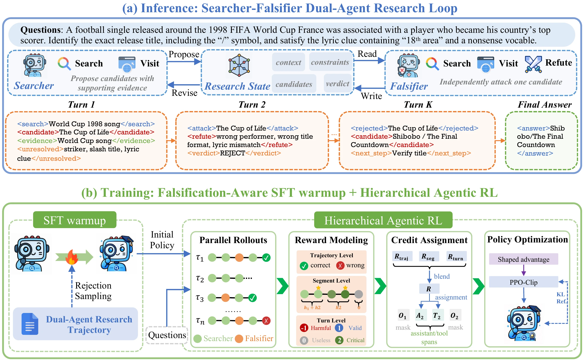
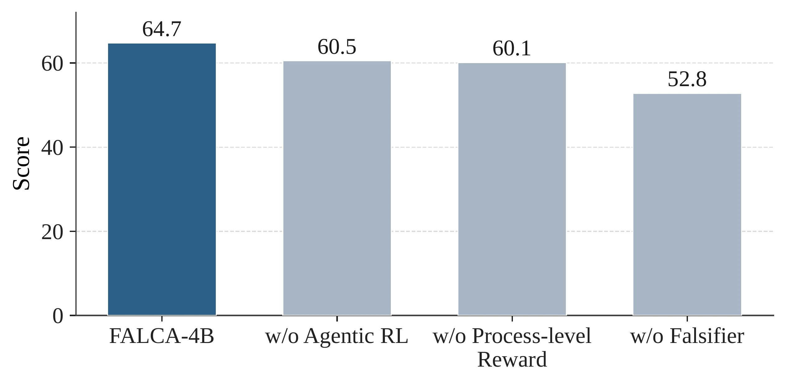
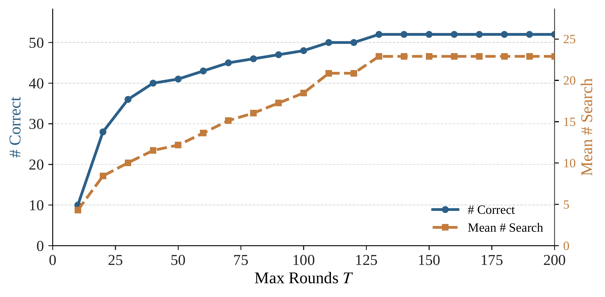
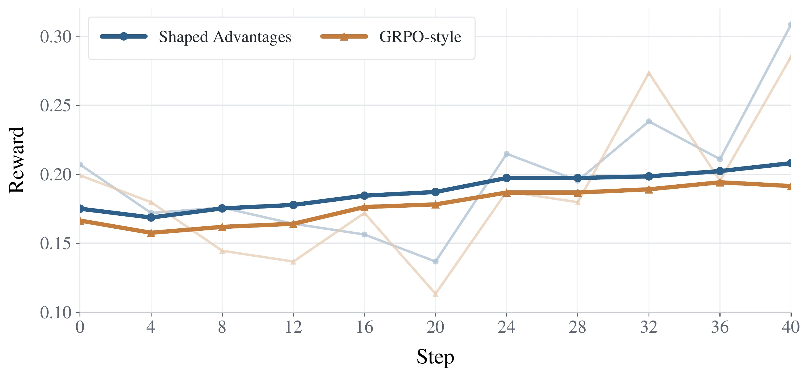
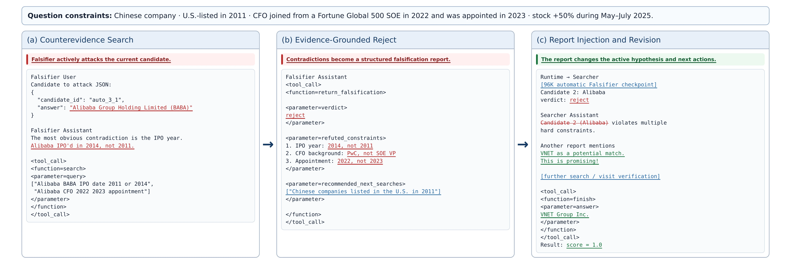
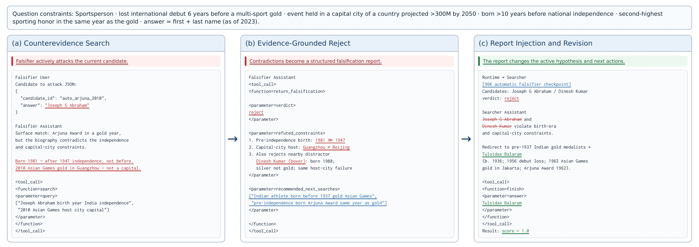
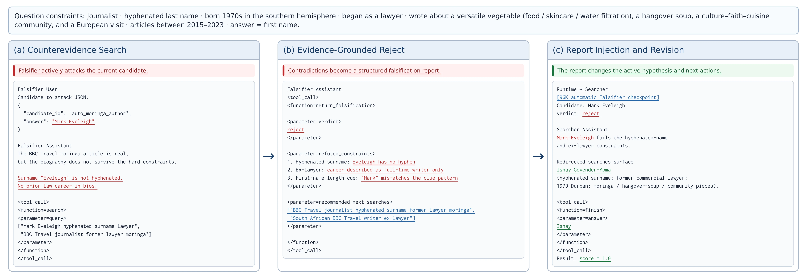

Abstract
Long-horizon deep search requires LLM agents to iteratively decompose complex information needs, gather evidence from external sources, and maintain a reliable research state under multiple constraints. A central challenge is that early mistakes can be amplified over the search trajectory: agents may anchor on an incorrect candidate, collect partially supporting evidence, overlook contradictions, and accumulate errors that misguide subsequent reasoning.
We propose FALCA, a falsification-aware framework that formulates deep search as a propose–falsify process. FALCA adopts a collaborative Searcher–Falsifier architecture, where the Searcher proposes candidate answers or sub-answers, while independent Falsifiers actively seek counterevidence, check unmet constraints, identify conflicts, and produce concise falsification reports for research-state revision. To strengthen this loop, we introduce falsification-aware training, combining SFT warmup on falsification trajectories with agentic RL based on parallel rollouts and hierarchical credit assignment over research stages, state transitions, and actions.
Experiments on five search benchmarks show that FALCA improves long-horizon deep search performance over backbone and harness ablations, while reducing confirmation bias and error accumulation through more effective falsification and research-state revision.
Method

Searcher–Falsifier research loop
At each research stage the Searcher proposes candidate hypotheses from its current research state.
For each candidate, an independent Falsifier follows a contradiction-first strategy: it searches for
counterevidence and returns a structured report through the refute tool, with a verdict
(reject, survive, or uncertain), refuted and unresolved constraints, retrieved
evidence, and recommended follow-up queries. Rejected candidates are removed, unresolved constraints
become new search targets, and evidence is preserved through update_context, which also
marks the boundary of a research segment. Both agents share the same search and
visit tools, so they reason over consistent evidence.
Falsification-guided SFT warmup
Trajectories generated under this protocol are filtered by rejection sampling, keeping those with correct answers, valid tool interactions, and sufficient evidence support. SFT on these trajectories, with environment observations masked, teaches the Searcher tool use, context updating, Searcher–Falsifier coordination, and candidate revision before reinforcement learning.
Hierarchical reward and credit assignment
Binary final-answer rewards cannot tell critical actions from redundant exploration. FALCA rewards a trajectory at three granularities and assigns each signal to the policy tokens it describes: a trajectory reward for final answer correctness, broadcast across the trajectory and normalized by the number of segments; a segment reward that spreads the credit for each completed sub-goal uniformly over the research stages that led to it; and a turn reward from an LLM judge that rates each action as harmful, neutral, useful, or critical, including whether it falsifies an unsupported hypothesis or triggers a meaningful research-state revision.
Policy optimization without group normalization
For hard queries, all rollouts of a prompt often receive the same final reward, and group-relative advantages vanish. FALCA therefore optimizes the token-level shaped advantages directly with a PPO-style clipped objective, using DAPO-style asymmetric clipping and a KL penalty towards the SFT reference policy. Rollouts run asynchronously, and turn-level process scores are computed as soon as each trajectory finishes, so slow pages or long falsification rounds do not block the batch.
Results
| Model | BrowseComp | GAIA | DeepSearchQA | xbench-2510 | WideSearch-en |
|---|---|---|---|---|---|
| Default context-management harness | |||||
| GPT-5 | 54.9 | 76.4 | 79.0 | 75.0 | 59.7 |
| Opus-4.6 | 83.7 | 75.0 | 91.3 | – | 77.5 |
| Gemini-3.1-Pro | 85.9 | 80.6 | 93.3 | 53.0 | 66.4 |
| Qwen3.5-397B | 78.6 | 83.5 | 82.1 | 61.0 | 74.0 |
| DeepMiner-32B | 33.5 | 58.7 | – | 62.0 | – |
| WebDancer-32B | 3.8 | 51.5 | – | 39.0 | – |
| WebSailor-32B | 10.5 | 53.2 | – | – | – |
| Tongyi-DeepResearch-30B | 43.4 | 70.9 | – | 55.0 | – |
| Qwen3.5-9B | 34.2 | 65.0 | 65.5 | 51.0 | 17.5 |
| MiroThinker-8B | 31.1 | 66.4 | 36.7 | 34.0 | – |
| WebExplorer-8B | 15.7 | 32.0 | 17.8 | 53.7 | – |
| LiteResearcher-4B | 27.5 | 71.3 | 17.2 | 12.0 | 1.73 |
| AgentCPM-Explore-4B | 24.1 | 63.9 | 32.8 | 34.0 | – |
| Qwen3.5-4B (our backbone) | 32.7 | 65.0 | 62.6 | 45.0 | 53.9 |
| Falsifier-based harness | |||||
| Qwen3.5-9B | 41.4 | 68.0 | 65.0 | 48.0 | 67.2 |
| Qwen3.5-4B | 39.0 | 62.1 | 63.3 | 49.0 | 64.3 |
| FALCA-4B | 56.0 | 72.8 | 70.8 | 58.0 | 65.8 |
Bold marks the best result under the Falsifier-based harness.
The Falsifier helps, and training is what makes it pay off
With the Qwen3.5-4B backbone unchanged, switching to the Falsifier-based harness raises the average score from 51.8 to 55.5. Under the same harness, FALCA-4B raises it further to 64.7 and beats the untrained Qwen3.5-4B on every benchmark: SFT teaches the propose–falsify protocol, and agentic RL teaches the Searcher how to act on falsification reports. FALCA-4B also surpasses Qwen3.5-9B under the same harness (64.7 vs. 57.9) and remains competitive with several 30B–32B search agents.
The largest gains are on BrowseComp, xbench-2510, and DeepSearchQA, which demand multi-step evidence aggregation, constraint verification, and candidate elimination. On WideSearch-en, which emphasizes broad-coverage collection, the gain is smaller, while the absolute score stays strong at 65.8.
Analysis


Shaped advantages under degenerate rollout groups
About 66% of rollout groups in our training have zero within-group reward variance, which removes the learning signal of GRPO-style group-relative advantages. Shaped advantages keep learning from segment- and turn-level differences: the training reward keeps rising instead of plateauing early, and the agent searches more persistently.

| Setting | Avg. | Turns | Tokens | Search | Visit |
|---|---|---|---|---|---|
| Shaped advantages | 64.7 | 79.8 | 8.7M | 63.6 | 14.9 |
| GRPO-style | 61.2 | 62.8 | 6.7M | 47.7 | 14.0 |
Case Studies
Falsification reports act as state transitions: they change what the Searcher believes and where it searches next, rather than only checking the final answer.



BibTeX
@article{dou2026falca,
title = {FALCA: Falsification-Aware Reinforcement Learning with
Hierarchical Credit Assignment for Long-Horizon Deep Search Agents},
author = {Dou, Zijun and Luo, Kun and Li, Chaofan and
Lu, Shuqi and Liu, Zheng},
journal = {arXiv preprint},
year = {2026}
}